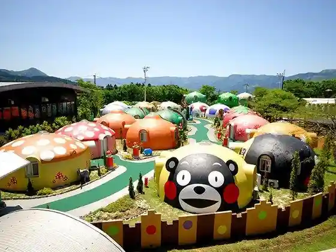
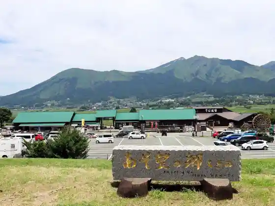
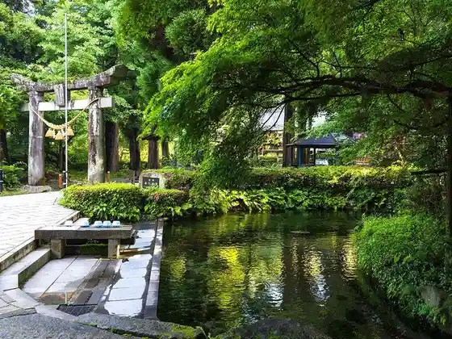
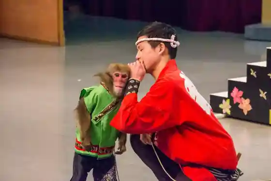

Aso Farm Land
Minamiaso, Kumamoto · 0967-67-2100 · Official / source link

Roadside Station Aso Bo no Sato Kugi no
Minamiaso, Kumamoto · 0967-67-3010 · Official / source link

Shirakawa Suigen
Minamiaso, Kumamoto · 0967-67-1112 · Official / source link

Aso O Saru Village Saru Mawashi Gekijo
Minamiaso, Kumamoto · 0967-35-1341 · Official / source link

Minamiaso Soba Dojo
Minamiaso, Kumamoto · 0967-67-0507 · Official / source link
Minamiaso Onsen Sato
Minamiaso, Kumamoto · 0967-67-2222 · Official / source link
Shirozu Onsen Take no Kurayama So
Minamiaso, Kumamoto · 0967-67-2980 · Official / source link
Minamiaso Kugino Onsen Shiki Forest
Minamiaso, Kumamoto · 0967-67-2212 · Official / source link
Daishizen Aso Kenko Forest Aso Farm Land
Minamiaso, Kumamoto · Official / source link
Jiku Sha
Minamiaso, Kumamoto · 0967-63-3250 · Official / source link
Minamiaso Highlands no Ie no A
Minamiaso, Kumamoto · 0967-62-3010 · Official / source link
Jigoku Onsen Ao Kaze So.
Minamiaso, Kumamoto · 0967-67-0005 · Official / source link
Minamiaso Runa Tenmondai Oberuju Mori no Atorie
Minamiaso, Kumamoto · 0967-62-3006 · Official / source link
Hisanaga Ya
Minamiaso, Kumamoto · 0967-67-1107 · Official / source link
Aso Kenko Farm
Minamiaso, Kumamoto · 0967-63-8500 · Official / source link
Aso Shirozu Onsen Ruri
Minamiaso, Kumamoto · 0967-62-9999 · Official / source link
Aso Farm Land Genki Forest
Minamiaso, Kumamoto · 0967-67-2100 · Official / source link
Isshin Gyo no Dai Sakura
Minamiaso, Kumamoto · 0967-67-1112 · Official / source link
Ike no Kubozono Chi
Minamiaso, Kumamoto · 0967-67-1111 · Official / source link
Yoru Mineyama
Minamiaso, Kumamoto · 0967-67-1111 · Official / source link
Ayu Hen Falls
Minamiaso, Kumamoto · Official / source link
Kazu Shika Ryugataki (Sugarugataki)
Minamiaso, Kumamoto · 0967-67-1111 · Official / source link
Yu Sawa Tsu Suigen (Wakisawatsusuigen)
Minamiaso, Kumamoto · 0967-67-1111 · Official / source link
Ike no Kawamizu Gen
Minamiaso, Kumamoto · 0967-67-1111 · Official / source link
Takezaki Suigen
Minamiaso, Kumamoto · 0967-67-1111 · Official / source link
Yoshida Shiro O Kenjo Kyu Ba
Minamiaso, Kumamoto · 0967-67-1111 · Official / source link
Minamiaso Runa Tenmondai
Minamiaso, Kumamoto · 0967-62-3006 · Official / source link
Ha Shomei Aso Art Museum
Minamiaso, Kumamoto · 0967-67-2719 · Official / source link
Kaze no Oka Aso Ono Katsuhiko Art Museum
Minamiaso, Kumamoto · 0967-65-5111 · Official / source link
Kagura no Sato Park
Minamiaso, Kumamoto · 0967-67-1111 · Official / source link
Kumamotoken Yagai Gekijo Asupekuta
Minamiaso, Kumamoto · 0967-67-1161 · Official / source link
Sugi Yoho Sono Aso Mitsubachi Ranch
Minamiaso, Kumamoto · 0967-67-2148 · Official / source link
Aso Kanko Budo Sono no Sugurepu Farm
Minamiaso, Kumamoto · 0967-62-9051 · Official / source link
Toraiarugorufu & Resort ASO COURSE
Minamiaso, Kumamoto · 0967-67-1616 · Official / source link
Tawarayama Toge Tembo Tokoro
Minamiaso, Kumamoto · 0967-67-1111 · Official / source link
Myojin Ike Meisui Park
Minamiaso, Kumamoto · 0967-67-1111 · Official / source link
Shioi Sha Suigen
Minamiaso, Kumamoto · 0967-67-1111 · Official / source link
Minamiaso Bussan Kan Nature Iori
Minamiaso, Kumamoto · 0967-62-3303 · Official / source link
Kannon Sakura
Minamiaso, Kumamoto · 0967-67-1112 · Official / source link
Isshin Gyo Koen Nishigawa no Himawari Hatake
Minamiaso, Kumamoto · 0967-67-1112 · Official / source link
Jizotoge
Minamiaso, Kumamoto · 0967-67-1112 · Official / source link
Jigoku Suigyoku Onsen
Minamiaso, Kumamoto · 0967-67-1112 · Official / source link
Aka Ushi no Kan
Minamiaso, Kumamoto · 0967-67-0848 · Official / source link
Octopus Books Hinata Bunko
Minamiaso, Kumamoto · Official / source link
Men no Ishi
Minamiaso, Kumamoto · 0967-67-2222 · Official / source link
Wakka
Minamiaso, Kumamoto · 0967-65-8114 · Official / source link
Bettei So Iori
Minamiaso, Kumamoto · 0967-67-4555 · Official / source link
BED&PANYA Umineko Ya 1987
Minamiaso, Kumamoto · 090-9407-1987 · Official / source link
Soba Tokoro
Minamiaso, Kumamoto · 0967-62-8140 · Official / source link
Cafe 75th st. (Sebuntei Fifusu Sutoriito)
Minamiaso, Kumamoto · 080-3909-8631 · Official / source link
Himitsu Kichi Gon
Minamiaso, Kumamoto · 050-7123-0655 · Official / source link
Nyima (Nima)
Minamiaso, Kumamoto · 0967-67-0864 · Official / source link
Ingurisshu Garden Minamiaso
Minamiaso, Kumamoto · 0967-67-2654 · Official / source link
Nachuraru Garden Minamiaso
Minamiaso, Kumamoto · 0967-67-2654 · Official / source link
Garden Vira Minamiaso
Minamiaso, Kumamoto · 0967-67-2654 · Official / source link
Kinochi Farm
Minamiaso, Kumamoto · 0967-68-0552 · Official / source link
Shin Aso Ohashi Tembo Tokoro Yo Myuru
Minamiaso, Kumamoto · 0967-67-1112 · Official / source link
Shin Aso Bridge
Minamiaso, Kumamoto · 0967-67-1112 · Official / source link
Minamiaso Oganikkukafe ASOBIO
Minamiaso, Kumamoto · 0967-67-3118 · Official / source link
310Books (San'ichizerobukkusu)
Minamiaso, Kumamoto · 0967-65-8105 · Official / source link
Chamitsulle BAKES&HERBS (Kamitsure Beikusu & Habusu)
Minamiaso, Kumamoto · 070-8510-4804 · Official / source link
glass studio MATSU (Matsu)
Minamiaso, Kumamoto · 0967-65-8108 · Official / source link
Robin Zo
Minamiaso, Kumamoto · 0967-67-2230 · Official / source link
Shirozu Sato Atopureisu Minamiaso_style
Minamiaso, Kumamoto · 0967-65-8331 · Official / source link
Kumamoto Jishin Shinsai Museum KIOKU (Kioku)
Minamiaso, Kumamoto · 0967-65-8065 · Official / source link
Shirakawa Yoshimi Shrine
Minamiaso, Kumamoto · 0967-62-0318 · Official / source link
Aso Shirozu Ryujin Gongen (Asohakusuiryujingongen) Shirohebi Shrine
Minamiaso, Kumamoto · 0967-62-8060 · Official / source link
Horai Horai Shrine (Hogihogijinja)
Minamiaso, Kumamoto · 0967-67-3361 · Official / source link
THE ACONCAGUA RESORTS (Akonkaguarizotsu)
Minamiaso, Kumamoto · 0967-67-2211 · Official / source link
OHANA
Minamiaso, Kumamoto · 080-9060-0518 · Official / source link